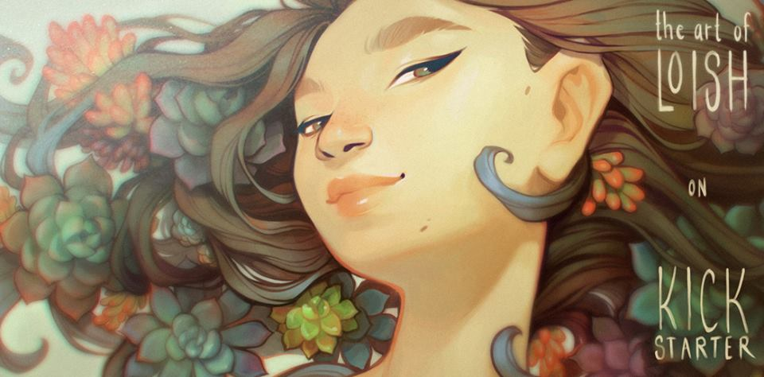

Welcome to my page!
The menu goes here
FOLLOW US!
Jessica Michelle Chastain (born March 24, 1977) is an American actress and film producer. She is known for her portrayals of strong-willed women in films with feminist themes. Chastain's accolades include a Golden Globe Award and two Academy Award nominations. Time magazine named her one of the 100 most influential people in the world in 2012. Born and raised in Sacramento, California, Chastain developed an interest in acting from a young age. In 1998, she made her professional stage debut as Shakespeare's Juliet. After studying acting at the Juilliard School, she was signed to a talent holding deal with the television producer John Wells. She was a recurring guest star in several television shows, including Law & Order: Trial by Jury. She also took on roles in the stage productions of Anton Chekhov's play The Cherry Orchard in 2004 and Oscar Wilde's tragedy Salome in 2006. Chastain made her film debut in the drama Jolene (2008), and gained wide recognition in 2011 for starring roles in half a dozen films, including the dramas Take Shelter and The Tree of Life. Her performance as an aspiring socialite in The Help earned her a nomination for the Academy Award for Best Supporting Actress. In 2012, she won a Golden Globe Award and received a nomination for the Academy Award for Best Actress for playing a CIA agent in the thriller Zero Dark Thirty. Chastain made her Broadway debut in a revival of The Heiress in the same year. Her highest-grossing releases came with the science fiction films Interstellar (2014) and The Martian (2015), and she continued to draw praise for her performances in the dramas A Most Violent Year (2014), Miss Sloane (2016), and Molly's Game (2017). Chastain is the founder of the production company Freckle Films, which was created to promote diversity in film. She is vocal about mental health issues, as well as gender and racial equality. She is married to the fashion executive Gian Luca Passi de Preposulo.